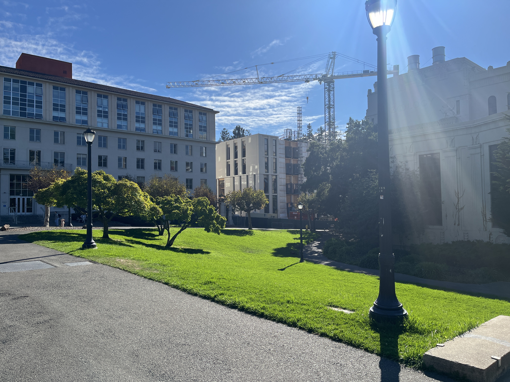

In this project, we use homography transformations on separate images from the same camera viewer to warp and stitch together images into a panorama/mosaic.
When gathering the images, the observer/camera needs to stay in the same position the entire time, while only rotating about the center axis. In this part, it is important that the images have significant overlapping features, in order to later define correspondences between pairs of images. Not having enough correspondences can lead to numerical instability. Below are three images of Dwinelle Hall captured at three different angles.
Next, in order to define a transformation matrix from points in the original image to the warped image of the new perspective, we set up a system of equations in homogenous coordinates. We stack the correspondence points in a tall matrix, which results in an overdetermined least squares problem solving for the parameters of the homography matrix, which can then be reshaped to 3x3. Below are the defined correspondence points on the left and middle images.


With the homography matrix defined between the pairs of images, we can then warp one image to the points the other. We first calculate the bounding box of the new image by multiplying the homography matrix with the corners of the original image, to avoid cutting off any values. We can then define the output polygon using sk.draw and the warped corners, then applying the inverse of the homography matrix to the polygon points to get the original points, whose values are assigned to the corresponding warped points, after interpolating to integer indices.
An example of the above warping process can be seen through rectification, adjusting a surface which is not orthogonal to the camera so that it appears to be so. We do this by selecting the boundaries of the surface, like the four corners of a rectangle, and warping them to rectangular points in a new canvas. Below is an example using a picture of a microwave.